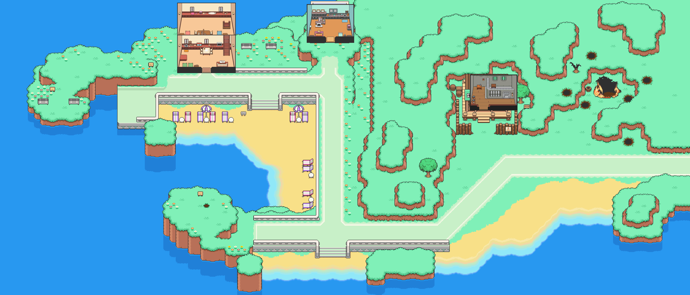

Our Story
Our vision is to use state-of-the-art technology accross fields including physics, electrical-engineering, nanofabrication, and mechanical engineering to make holograms a reality. Our first product involves a holographic handheld gaming console, which we are on track to design, build, and ship this product by the end of Summer 2020.
In his favorite corner on the 5th floor of MIT’s Barker library, Zack often psets late into the night. It’s a fun corner, but dangerous… because although the corner contains hundreds of books on Zack’s favorite subjects ranging from semi-conductors and magnets, it distract him from finishing his work.
One book caught his attention, describing the attempts to construct volumetric displays (or holograms) in excruciating detail. One approach that stood out in particular involved using photo upconversion, a process by which a material is able to emit light after two sequential absorptions of lower energy light. Combined with Zack's love for CRT TVs (since they have lower lag for playing Super Smash Melee), Zack came up with a novel idea for building holograms backed by his understanding of physics and electrical engineering.
Catherine and Zack and united by their love for videogames, and they are particularly excited by holographic displays as a novel medium for visualizing top-down role-playing videogames. For instance, the scenes in Mother 3, the game where Lucas is introduced, would be particularly fitting for a holographic display medium where you can see the characters walk around in a 3D environment (see a map from Mother 3 for an idea). We want to augment the gaming experience by introducing a new display medium.
Timeline
Jan. 13, 2020 - Began Project
In a conversation about photoupconversion and CRTs, Zack explained his idea for creating holograms that involves two lasers exciting a point in space. Catherine thought it was a great idea and they began exploring the idea more.
Feb. 3rd, 2020 - Filed Provisional Patent
Filed provisional patent for micro-nano scale circuits for photo-upconversion and inkjet-printing OLEDs/ QLEDs, titled Construction and Manufacturing Process of a Dynamic 3D Holographic Display.
Feb. 22nd, 2020 - Completed First Prototype
Completed a first prototype using a spinning helical display using materials from MakeMIT. This allows an image to hit every point the surface. Here are some pictures and videos of our process: 1: demo
Mar. 5th, 2020 - Presented Prototype
Presented first prototype (spinning helical display) at the showcase located at the MIT Museum to investors for MIT's Sandbox program. Here are some videos and pictures from the event: 1: presenting to a curious crowd
Summer, 2020 - Goals
Continue growing our project as part of the DeltaV MIT Startup accelerator program, build a hand-held video-game console using the spinning helical display, run a Kickstarter to distribute the device to the masses.
Our Team

Zachary Pitcher
Zack is an MIT senior who loves to build projects that combine technology with creative expression. He's majoring in Electrical Engineering and Computer Science, with a concentration in nanoelectronics, materials, and manufacturing, and will begin his MEng in the Fall of 2020. His dream is to make an innovative technology that inspires people in the way that other inventors have for him in the past.

Catherine Zeng
Catherine is a senior studying EECS at MIT. She will begin her Masters of Engineering at MIT in the Applied Physics concentration starting Fall 2020. She plays piano and went to arts schools majoring in piano for seven years prior to MIT. She loves to work on projects & has won prizes at hackathons including Top 10 at HackMIT (3x), the Best Internet of Things Prize, and Niantic AR Prize. She also has built a boba machine, Lambda Tea Corporation, with friends built was funded by Y Combinator, subsequently participated in YC's Winter 2018 batch, and runs Applihood.com which has helped hundreds of high schoolers get into their dream schools. Outside of entrepreneurship, Catherine likes to play piano (she is currently in a rock band), and Smash (n64 & melee).
Subscribe
The best way to contact us is to email us at zat@mit.edu.
Subscribe to our mailing list where we commit to sending bi-weekly updates about our progress! You will be the first to hear about our ideas, progress, and products.